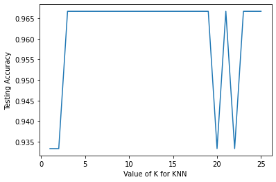

KKN (K-NEAREST NEIGHBOR)
KKN (K-NEAREST NEIGHBOR)#
KNN (menggunakan scikit-learn) pada dataset Iris. Membangun model untuk mengklasifikasikan jenis bunga Iris berdasarkan panjang sepal, lebar speal, panjang petal dan lebar petal
algoritma KNN merupakan algoritma klasifikasi yang bekerja dengan mengambil sejumlah K data terdekat (tetangganya) sebagai acuan untuk menentukan kelas dari data baru. Algoritma ini mengklasifikasikan data berdasarkan similarity atau kemiripan atau kedekatannya terhadap data lainnya.
Secara umum, cara kerja algoritma KNN adalah sebagai berikut.
Tentukan jumlah tetangga (K) yang akan digunakan untuk pertimbangan penentuan kelas.
Hitung jarak dari data baru ke masing-masing data point di dataset.
Ambil sejumlah K data dengan jarak terdekat, kemudian tentukan kelas dari data baru tersebut.
Perhatikan gambar ilustrasi ini. ![knn-1.png]()
Dari gambar di atas, ada sejumlah data point yang terbagi menjadi dua kelas yaitu A (biru) dan B (kuning). Misalnya ada data baru (hitam) yang akan kita prediksi kelasnya menggunakan algoritma KNN. Dari contoh di atas, nilai K yang digunakan adalah 3. Setelah dihitung jarak antara titik hitam ke masing-masing data point lainnya, didapatkan 3 titik terdekat yang terdiri dari 2 titik kuning dan satu titik biru seperti yang diilustrasikan di dalam kotak merah, maka kelas untuk data baru (titik hitam) adalah B (kuning).
Menghitung jarak dengan Euclidean Distance.
Untuk menghitung jarak antara dua titik pada algoritma KNN digunakan metode Euclidean Distance yang dapat digunakan pada 1-dimensional space, 2-dimensional space, atau multi-dimensional space.
1-dimensional space berarti perhitungan jarak hanya menggunakan satu variabel bebas (independent variable), 2-dimensional-space berarti ada dua variabel bebas, dan multi-dimensional space berarti ada lebih dari dua variabel.
Secara umum, formula Euclidean distance pada 1-dimensional space adalah sebagai berikut.
![image.png]()
formula euclidean distance Formula di atas dapat digunakan jika jumlah independent variable hanya ada satu variabel. Lalu, bagaimana jika ada banyak variabel yang digunakan?
Jika ada lebih dari satu, kita dapat menjumlahkannya seperti di bawah ini.
![image.png]()
from IPython.display import IFrame
IFrame('http://archive.ics.uci.edu/ml/machine-learning-databases/iris/iris.data', width=400, height=200)
from sklearn.datasets import load_iris
#Buat objek kumpulan yang berisi set data iris dan atributnya.
iris = load_iris()
type(iris)
sklearn.utils.Bunch
#Print the iris data
iris.data
array([[5.1, 3.5, 1.4, 0.2],
[4.9, 3. , 1.4, 0.2],
[4.7, 3.2, 1.3, 0.2],
[4.6, 3.1, 1.5, 0.2],
[5. , 3.6, 1.4, 0.2],
[5.4, 3.9, 1.7, 0.4],
[4.6, 3.4, 1.4, 0.3],
[5. , 3.4, 1.5, 0.2],
[4.4, 2.9, 1.4, 0.2],
[4.9, 3.1, 1.5, 0.1],
[5.4, 3.7, 1.5, 0.2],
[4.8, 3.4, 1.6, 0.2],
[4.8, 3. , 1.4, 0.1],
[4.3, 3. , 1.1, 0.1],
[5.8, 4. , 1.2, 0.2],
[5.7, 4.4, 1.5, 0.4],
[5.4, 3.9, 1.3, 0.4],
[5.1, 3.5, 1.4, 0.3],
[5.7, 3.8, 1.7, 0.3],
[5.1, 3.8, 1.5, 0.3],
[5.4, 3.4, 1.7, 0.2],
[5.1, 3.7, 1.5, 0.4],
[4.6, 3.6, 1. , 0.2],
[5.1, 3.3, 1.7, 0.5],
[4.8, 3.4, 1.9, 0.2],
[5. , 3. , 1.6, 0.2],
[5. , 3.4, 1.6, 0.4],
[5.2, 3.5, 1.5, 0.2],
[5.2, 3.4, 1.4, 0.2],
[4.7, 3.2, 1.6, 0.2],
[4.8, 3.1, 1.6, 0.2],
[5.4, 3.4, 1.5, 0.4],
[5.2, 4.1, 1.5, 0.1],
[5.5, 4.2, 1.4, 0.2],
[4.9, 3.1, 1.5, 0.2],
[5. , 3.2, 1.2, 0.2],
[5.5, 3.5, 1.3, 0.2],
[4.9, 3.6, 1.4, 0.1],
[4.4, 3. , 1.3, 0.2],
[5.1, 3.4, 1.5, 0.2],
[5. , 3.5, 1.3, 0.3],
[4.5, 2.3, 1.3, 0.3],
[4.4, 3.2, 1.3, 0.2],
[5. , 3.5, 1.6, 0.6],
[5.1, 3.8, 1.9, 0.4],
[4.8, 3. , 1.4, 0.3],
[5.1, 3.8, 1.6, 0.2],
[4.6, 3.2, 1.4, 0.2],
[5.3, 3.7, 1.5, 0.2],
[5. , 3.3, 1.4, 0.2],
[7. , 3.2, 4.7, 1.4],
[6.4, 3.2, 4.5, 1.5],
[6.9, 3.1, 4.9, 1.5],
[5.5, 2.3, 4. , 1.3],
[6.5, 2.8, 4.6, 1.5],
[5.7, 2.8, 4.5, 1.3],
[6.3, 3.3, 4.7, 1.6],
[4.9, 2.4, 3.3, 1. ],
[6.6, 2.9, 4.6, 1.3],
[5.2, 2.7, 3.9, 1.4],
[5. , 2. , 3.5, 1. ],
[5.9, 3. , 4.2, 1.5],
[6. , 2.2, 4. , 1. ],
[6.1, 2.9, 4.7, 1.4],
[5.6, 2.9, 3.6, 1.3],
[6.7, 3.1, 4.4, 1.4],
[5.6, 3. , 4.5, 1.5],
[5.8, 2.7, 4.1, 1. ],
[6.2, 2.2, 4.5, 1.5],
[5.6, 2.5, 3.9, 1.1],
[5.9, 3.2, 4.8, 1.8],
[6.1, 2.8, 4. , 1.3],
[6.3, 2.5, 4.9, 1.5],
[6.1, 2.8, 4.7, 1.2],
[6.4, 2.9, 4.3, 1.3],
[6.6, 3. , 4.4, 1.4],
[6.8, 2.8, 4.8, 1.4],
[6.7, 3. , 5. , 1.7],
[6. , 2.9, 4.5, 1.5],
[5.7, 2.6, 3.5, 1. ],
[5.5, 2.4, 3.8, 1.1],
[5.5, 2.4, 3.7, 1. ],
[5.8, 2.7, 3.9, 1.2],
[6. , 2.7, 5.1, 1.6],
[5.4, 3. , 4.5, 1.5],
[6. , 3.4, 4.5, 1.6],
[6.7, 3.1, 4.7, 1.5],
[6.3, 2.3, 4.4, 1.3],
[5.6, 3. , 4.1, 1.3],
[5.5, 2.5, 4. , 1.3],
[5.5, 2.6, 4.4, 1.2],
[6.1, 3. , 4.6, 1.4],
[5.8, 2.6, 4. , 1.2],
[5. , 2.3, 3.3, 1. ],
[5.6, 2.7, 4.2, 1.3],
[5.7, 3. , 4.2, 1.2],
[5.7, 2.9, 4.2, 1.3],
[6.2, 2.9, 4.3, 1.3],
[5.1, 2.5, 3. , 1.1],
[5.7, 2.8, 4.1, 1.3],
[6.3, 3.3, 6. , 2.5],
[5.8, 2.7, 5.1, 1.9],
[7.1, 3. , 5.9, 2.1],
[6.3, 2.9, 5.6, 1.8],
[6.5, 3. , 5.8, 2.2],
[7.6, 3. , 6.6, 2.1],
[4.9, 2.5, 4.5, 1.7],
[7.3, 2.9, 6.3, 1.8],
[6.7, 2.5, 5.8, 1.8],
[7.2, 3.6, 6.1, 2.5],
[6.5, 3.2, 5.1, 2. ],
[6.4, 2.7, 5.3, 1.9],
[6.8, 3. , 5.5, 2.1],
[5.7, 2.5, 5. , 2. ],
[5.8, 2.8, 5.1, 2.4],
[6.4, 3.2, 5.3, 2.3],
[6.5, 3. , 5.5, 1.8],
[7.7, 3.8, 6.7, 2.2],
[7.7, 2.6, 6.9, 2.3],
[6. , 2.2, 5. , 1.5],
[6.9, 3.2, 5.7, 2.3],
[5.6, 2.8, 4.9, 2. ],
[7.7, 2.8, 6.7, 2. ],
[6.3, 2.7, 4.9, 1.8],
[6.7, 3.3, 5.7, 2.1],
[7.2, 3.2, 6. , 1.8],
[6.2, 2.8, 4.8, 1.8],
[6.1, 3. , 4.9, 1.8],
[6.4, 2.8, 5.6, 2.1],
[7.2, 3. , 5.8, 1.6],
[7.4, 2.8, 6.1, 1.9],
[7.9, 3.8, 6.4, 2. ],
[6.4, 2.8, 5.6, 2.2],
[6.3, 2.8, 5.1, 1.5],
[6.1, 2.6, 5.6, 1.4],
[7.7, 3. , 6.1, 2.3],
[6.3, 3.4, 5.6, 2.4],
[6.4, 3.1, 5.5, 1.8],
[6. , 3. , 4.8, 1.8],
[6.9, 3.1, 5.4, 2.1],
[6.7, 3.1, 5.6, 2.4],
[6.9, 3.1, 5.1, 2.3],
[5.8, 2.7, 5.1, 1.9],
[6.8, 3.2, 5.9, 2.3],
[6.7, 3.3, 5.7, 2.5],
[6.7, 3. , 5.2, 2.3],
[6.3, 2.5, 5. , 1.9],
[6.5, 3. , 5.2, 2. ],
[6.2, 3.4, 5.4, 2.3],
[5.9, 3. , 5.1, 1.8]])
#Names of 4 features (nama kolom)
print(iris.feature_names)
['sepal length (cm)', 'sepal width (cm)', 'petal length (cm)', 'petal width (cm)']
#Bilangan bulat yang mewakili spesies: 0 = setosa, 1=versicolor, 2=virginica
print(iris.target)
[0 0 0 0 0 0 0 0 0 0 0 0 0 0 0 0 0 0 0 0 0 0 0 0 0 0 0 0 0 0 0 0 0 0 0 0 0
0 0 0 0 0 0 0 0 0 0 0 0 0 1 1 1 1 1 1 1 1 1 1 1 1 1 1 1 1 1 1 1 1 1 1 1 1
1 1 1 1 1 1 1 1 1 1 1 1 1 1 1 1 1 1 1 1 1 1 1 1 1 1 2 2 2 2 2 2 2 2 2 2 2
2 2 2 2 2 2 2 2 2 2 2 2 2 2 2 2 2 2 2 2 2 2 2 2 2 2 2 2 2 2 2 2 2 2 2 2 2
2 2]
# 3 classes of target
print(iris.target_names)
['setosa' 'versicolor' 'virginica']
print(type(iris.data))
print(type(iris.target))
<class 'numpy.ndarray'>
<class 'numpy.ndarray'>
# kami memiliki total 150 pengamatan dan 4 fitur
print(iris.data.shape)
(150, 4)
# Fitur matriks dalam objek bernama X
X = iris.data
# vektor respons dalam objek bernama y
y = iris.target
print(X.shape)
print(y.shape)
(150, 4)
(150,)
train the model
# membagi data menjadi set pelatihan dan pengujian (80:20)
from sklearn.model_selection import train_test_split
X_train,X_test,y_train,y_test = train_test_split(X,y,test_size=0.2,random_state=4)
print(X_train.shape)
print(X_test.shape)
(120, 4)
(30, 4)
# shape of new y objects
print(y_train.shape)
print(y_test.shape)
(120,)
(30,)
#import the KNeighborsClassifier class from sklearn
from sklearn.neighbors import KNeighborsClassifier
#import metrics model to check the accuracy
from sklearn import metrics
#Try running from k=1 through 25 and record testing accuracy
k_range = range(1,26)
scores = {}
scores_list = []
for k in k_range:
knn = KNeighborsClassifier(n_neighbors=k)
knn.fit(X_train,y_train)
y_pred=knn.predict(X_test)
scores[k] = metrics.accuracy_score(y_test,y_pred)
scores_list.append(metrics.accuracy_score(y_test,y_pred))
#Testing accuracy for each value of K
scores
{1: 0.9333333333333333,
2: 0.9333333333333333,
3: 0.9666666666666667,
4: 0.9666666666666667,
5: 0.9666666666666667,
6: 0.9666666666666667,
7: 0.9666666666666667,
8: 0.9666666666666667,
9: 0.9666666666666667,
10: 0.9666666666666667,
11: 0.9666666666666667,
12: 0.9666666666666667,
13: 0.9666666666666667,
14: 0.9666666666666667,
15: 0.9666666666666667,
16: 0.9666666666666667,
17: 0.9666666666666667,
18: 0.9666666666666667,
19: 0.9666666666666667,
20: 0.9333333333333333,
21: 0.9666666666666667,
22: 0.9333333333333333,
23: 0.9666666666666667,
24: 0.9666666666666667,
25: 0.9666666666666667}
%matplotlib inline
import matplotlib.pyplot as plt
#plot the relationship between K and the testing accuracy
plt.plot(k_range,scores_list)
plt.xlabel('Value of K for KNN')
plt.ylabel('Testing Accuracy')
Text(0, 0.5, 'Testing Accuracy')

Nilai K dengan 3 sampai 19 memiliki akurasi yang sama yaitu 96,66, jadi kita dapat menggunakan salah satu nilai dari itu, saya memilih K sebagai 5 dan melatih model dengan data pelatihan penuh
knn = KNeighborsClassifier(n_neighbors=5)
knn.fit(X,y)
KNeighborsClassifier()
#0 = setosa, 1=versicolor, 2=virginica
classes = {0:'setosa',1:'versicolor',2:'virginica'}
#Making prediction on some unseen data
#predict for the below two random observations
x_new = [[3,4,5,2],
[5,4,2,2]]
y_predict = knn.predict(x_new)
print(classes[y_predict[0]])
print(classes[y_predict[1]])
versicolor
setosa